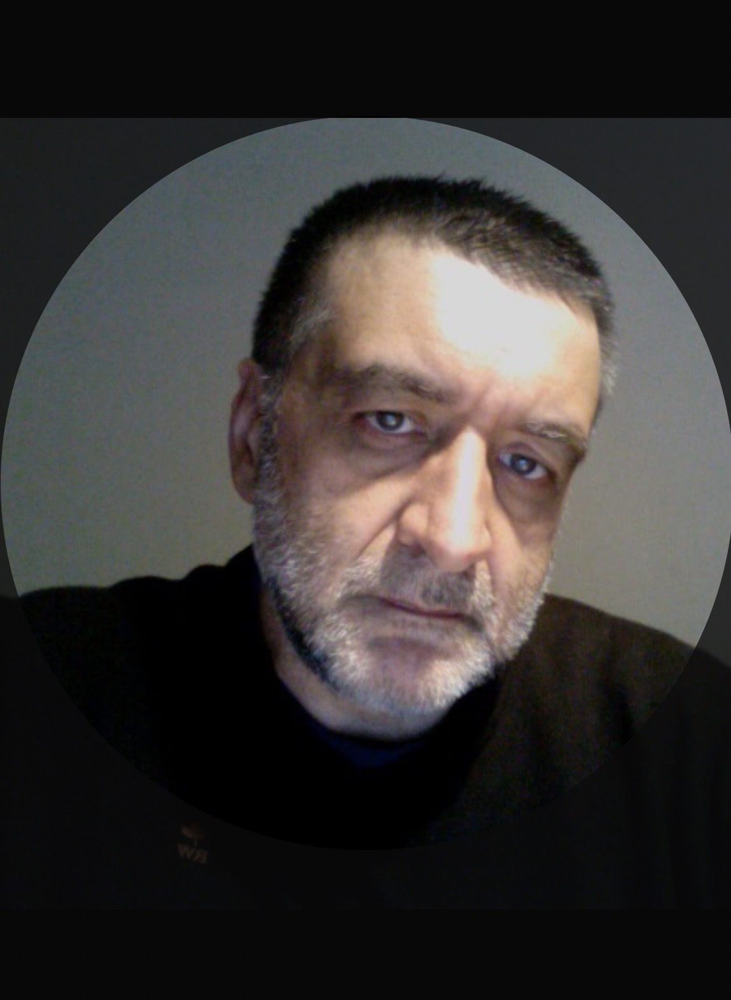

_Giuseppe Schifano, Web Developer

Contactgegevens
| giuseppe.schifano@gmail.com | |
| www.linkedin.com/in/ | |
| giuseppeschifano.github.io/mijn-cv | |
| Genk, Limburg | |
| 27/8/1959 | |
| Belg | |
| B |